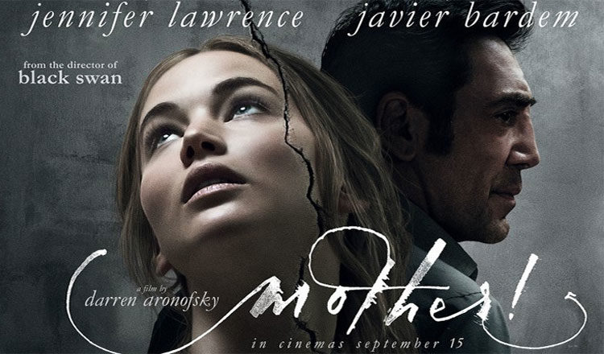

Destaque da Semana

Mãe!
Uma mulher (Jennifer Lawrence) pensa que terá um final de semana tranquilo com o marido em casa. Mas de repente começam a chegar várias pessoas na residência dos dois. Isso faz com que o casamento deles seja testado das mais variadas maneiras.
- Mistério
- Drama
Catálogo Principal

Próximos Lançamentos
| Filme | Ano | Nota (IMDb) | Status |
|---|---|---|---|
| Cisne Negro | 2010 | 8,0 | Finalizado |
| Pearl | 2022 | 7,0 | Finalizado |
| Perfect Blue | 1997 | 8,0 | Finalizado |
| O Bebê de Rosemary | 1968 | 8,0 | Finalizado |
| Meninas Malvadas | 2004 | 7,1 | Finalizado |